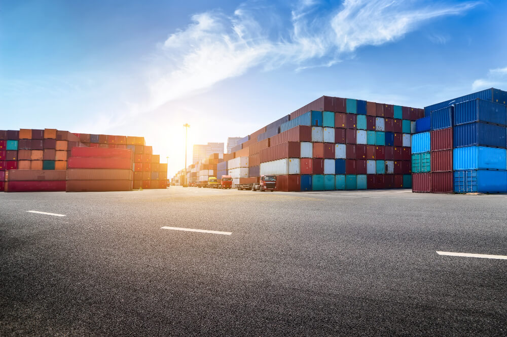

Foreign trade is the exchange of goods and services between countries. It is important for your company because it allows you to access new markets, diversify your revenues, reduce your costs, improve your competitiveness and take advantage of the opportunities offered by international trade agreements.

Frequently Asked Questions
1. What is foreign trade and why is it important for my company?
2. What services does your foreign trade consulting company offer?
We offer comprehensive foreign trade advisory services, such as:
- Market analysis: we help you identify the opportunities and risks of exporting or importing in different countries and sectors.
- Commercial strategy: we advise you on the definition and execution of your internationalization plan, from the selection of the target markets to the promotion and monitoring of your sales.
- Customs management: we facilitate compliance with customs rules and procedures, both in the country of origin and destination, to speed up your operations and avoid penalties or delays.
- International logistics: we offer solutions for transport, storage and distribution of your products, adapted to your needs and the characteristics of each market.
- Legal and financial advice: we guide you in the legal and financial aspects of foreign trade, such as contracts, payment methods, insurance, taxes and subsidies.
3. What are the advantages of hiring your foreign trade consulting company?
Hiring our foreign trade consulting company has the following advantages:
- You will have a team of experts with extensive experience and knowledge of the foreign trade sector, who will provide you with a personalized and quality service.
- You will save time and money by delegating to us the procedures and procedures related to foreign trade, avoiding errors or unforeseen events that may affect your operations.
- You will increase your chances of success by having a commercial strategy appropriate to your product, your market and your competition, as well as constant support throughout the process.
4. What guarantees does your foreign trade consulting company offer?
We offer guarantees of professionalism, confidentiality and transparency in all our services. We are committed to meeting the agreed deadlines and budgets, to respecting the intellectual and industrial property of our clients and to inform them periodically about the development and results of our actions.
5. How can I contact your foreign trade consulting company?
You can contact us through our web form, our email, our phone or our social networks. We will be happy to assist you and answer your questions. You can also request a personalized quote without obligation.